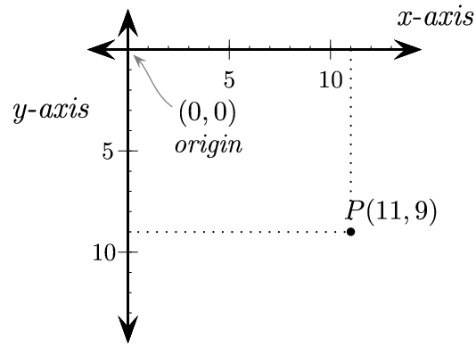
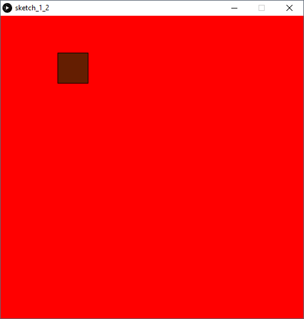

OK now for the fun part, it’s time to use processing! So what is processing? Processing is based on the Java language you have been using so far, with a lot of useful features to make it easier to do visual things such as drawing games.
If you make a new processing file, it’ll be blank. There are two methods that are commonly used within processing, and those are void draw() and void setup(). Everything inside the setup method is ran once right at the start of the program. This is useful for setting up any features that need you to make sure the program runs smoothly. Go ahead and write the following program:
void setup(){
size(500,500);
background(255,0,0);
}
So what is this doing? Well, the setup() runs only once, so not a great amount. It tells processing that we want a window size of width 500 pixels and height 500 pixels. It then sets the background colour to a very bright red. The background function is overloaded so it can be called in many different ways. If you call it with one parameter, it uses a grayscale colour. If you declare it with 3 as we have done then it uses red, green and blue values from 0-255 respectively to declare a colour. Because we have set red to max and green and blue to 0, the screen is a bright red.
OK so that’s not a very interesting program you say? Fine, let’s make something actually happen. First, we should get some input from the user. To do this, let’s make an input object so that we can just call the methods every time we need it. Let’s use the asdw keys as input to make something move left down right and up respectively. Processing has a globally accessible inbuilt variable called ‘key’ which stores the last key pressed as a character. It also has a variable called ‘keyPressed’ which is a Boolean that is true if any key on the keyboard is pressed. We want to check if one of the keys we care about is being pressed, and we will do this using an if statement to check if key is either a,w,s or d and also if the keyPressed is currently true (so the key is actually being pressed at that moment). Add the following code to your program:
class InputKey
{
public boolean keyAvailable()
{
if ((key=='a'||key=='w'||key=='s'||key=='d')&&keyPressed)
{
return true;
}
else
{
return false;
}
}
}
OK, so using this class we can check if a,s,d or w is being pressed. Let’s make another class to represent something moving around the screen. Let’s call this class a SquareObject. It should hold 4 variables internally, representing x,y and the width of the height of the object. These should be private to the object, to maintain encapsulation.
Image source: http://programarcadegames.com/chapters/05_intro_to_graphics/Computer_coordinates_2D.png
We should use a constructor to set the initial position (x,y) of this square:
private float x,y;
private float width=50,height=50;
public SquareObject(float x,float y)
{
this.x=x;
this.y=y;
}
So which methods does this square need? We need it to be able to change its x and y co-ordinates if we want it to move, so let’s implement changeX and changeY methods to allow this to happen. They should take a float as a parameter so that they are able to change X and Y by anything using positive or negative values. We should also declare a void draw() method for the square to draw itself, as this should be the responsibility of the square not any other object according to good OOP principles.
public void changeX(float distance)
{
x+=distance;
}
public void changeY(float distance)
{
y+=distance;
}
public void draw()
{
fill(100,30,1);
rect(x, y, width,height);
}
Let us also create a Controller class that is responsible for updating all of the logic. This way, we can ensure that we don’t pollute namespaces by having global variables, and it is also a good abstraction to have in general. Let us use its constructor to make an InputKey object as well as a SquareObject object which will be stored inside a global Controller object. Controller controller new Controller(); should be declared right at the top, outside of any method so that it is global. Your Controller class should look something like this:
class Controller
{
private InputKey inputKey;
private SquareObject square;
public Controller()
{
inputKey=new InputKey();
square = new SquareObject(30,30);
}
}
We should also create an update method for the controller for it to run every time draw calls it, which will update the simulation logic. So what do we want this to do? Let’s make it get a key and change the x or y value of the square based on which key was pressed. Let’s also make it draw the square so we can actually see what is happening. It should also first set the background again, to clear the screen and ensure the background is properly set. Let’s use an if statement to see if any of the right keys are being pressed, and use a switch statement to make the square move based on which key is pressed:
public void update()
{
background(255,0,0);
if (inputKey.keyAvailable())
{
switch(key)
{
case 'a':
square.changeX(-1);
break;
case 's':
square.changeY(1);
break;
case 'd':
square.changeX(1);
break;
case 'w':
square.changeY(-1);
break;
}
}
square.draw();
}
And finally, let’s make our draw method call controller.update():
void draw()
{
controller.update();
}

Success! We have a square that we can move around the screen using the asdw keys!